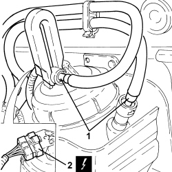
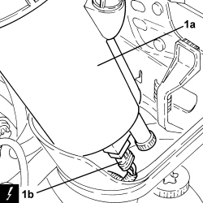
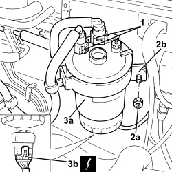

1044B10 FUEL FILTER ASSEMBLY - R + R OR REPLACE
- Path
- Procedures > 10 ENGINE > 1044 FUEL CIRCUIT PUMP/S AND DEVICES > 1044B FUEL FILTERS > 1044B10 FUEL FILTER ASSEMBLY - R + R OR REPLACE
- Kind
- repair procedure (removal / refitting; the operation number is the code)
- Applies to
- engines: 1.9 JTD 8v, 1.9 JTD 16v, 2.4 JTD 20v; all production periods
- Interactive page
- https://sloeber94.github.io/elrnDB-fCrm/en/#/194000299
Applies to: engines: 1.9 JTD 8v, 1.9 JTD 16v; all production periods
 Removing
Removing
 Refitting
RefittingOp. 1016A10 SOUND-PROOFING COVER - R.R
- Make sure that the ignition key is in the OFF position, then disconnect the battery terminal (-).
Description | Connector | |
|---|---|---|
- | Battery |
1. Disconnect the rapid connectors for the fuel pipes, fuel filter side using a suitable tool.
2. Disconnect the electrical connection from the fuel filter.
Description | Connector | |
|---|---|---|
2 | Temperature sensor and heating resistance COM |

Applies to: engines: 1.9 JTD 8v, 1.9 JTD 16v; all production periods
1. Lift up the fuel filter assembly (1a) as necessary to disconnect the electrical connection from the water presence sensor (1b), then remove it.
Description | Connector | |
|---|---|---|
1b | Water in diesel filter sensor |

Applies to: engines: 1.9 JTD 8v, 1.9 JTD 16v; all production periods
Refitting
Removing- Connect the electrical connection to the water presence sensor, then place the fuel filter assembly back in its housing.
- Connect the electrical connection to the fuel filter.
- Connect the rapid connectors for the fuel pipes, fuel filter side.
- Connect the negative battery terminal.
Applies to: engines: 2.4 JTD 20v; all production periods
Removing
Refitting- Make sure that the ignition key is in the OFF position, then disconnect the battery terminal (-).
Description | Connector | |
|---|---|---|
- | Battery |
1. Disconnect the rapid connectors from the fuel filter, fuel filter side.
2. Unscrew nut (2a) and open fuel filter bracket (2b).
3. Raise the fuel filter assembly (3a) by the required amount and disconnect the electrical connection (3b) from the water presence sensor, then remove.
Description | Connector | |
|---|---|---|
3b | Water in diesel filter sensor |

Applies to: engines: 2.4 JTD 20v; all production periods
1. Working at the bench, unscrew the water presence sensor in the fuel filter and remove.

Applies to: engines: 2.4 JTD 20v; all production periods
Refitting
Removing- Refit the water sensor in its seat on the fuel filter.
- Connect the electrical connection to the water presence sensor, then refit the fuel filter assembly in its seat.
- Secure with fuel filter with its bracket and tighten the nut.
- Connect the rapid connectors, fuel filter side.
- Connect the negative battery terminal.
Topics linked from this page (5)
- 1016A10 SOUND-PROOFING COVER - R.R
- A001 BATTERY
- K031 WATER IN DIESEL FILTER SENSOR
- K100 TEMPERATURE SENSOR AND HEATING RESISTANCE
- K101 FUEL TEMPERATURE AND WATER IN FUEL FILTER SENSOR
Topics that link to this page (15)
- B013 ENGINE STARTS WITH DIFFICULTY
- D005 ENGINE DOES NOT PRODUCE BEST PERFORMANCE
- D014 ENGINE GOING OFF ON IDLING (THEN RESTARTING)
- D020 ENGINE CUTS OUT WHILST RUNNING (THEN NOT RESTARTING)
- D021 ENGINE CUTS OUT WHILST RUNNING (THEN RESTARTS)
- 1060GQ CHECK OPERATION OF SENSOR DETECTING PRESENCE OF WATER IN DIESEL FILTER
- 0010K60 60,000KM SERVICE
- 0010M20 120,000KM SERVICE
- 0010M80 180,000KM SERVICE
- 1044B12 FUEL FILTER PROTECTION R R
- 1044B20 FUEL FILTER FILTERING ELEMENT - REPLACE
- 1820B58 CLUTCH HYDRAULIC CIRCUIT VIBRATION DAMPER - R+R
- 1820B41 HOSE FROM CLUTCH RESERVOIR TO MASTER CYLINDER (PUMP) - R.R. FOR RIGHT HAND DRIVE VERSIONS
- 1820B52 <x>HOSE FROM MASTER CYLINDER (PUMP TO CLUTCH HYDRAULIC ACTUATOR - R&R</x>
- 3340B53 RIGID PIPE (ONE) FROM MASTER CYLINDER (PUMP) TO ABS HYDRAULIC CONTROL UNIT - R.R. FOR RIGHT HAND DRIVE VERSIONS